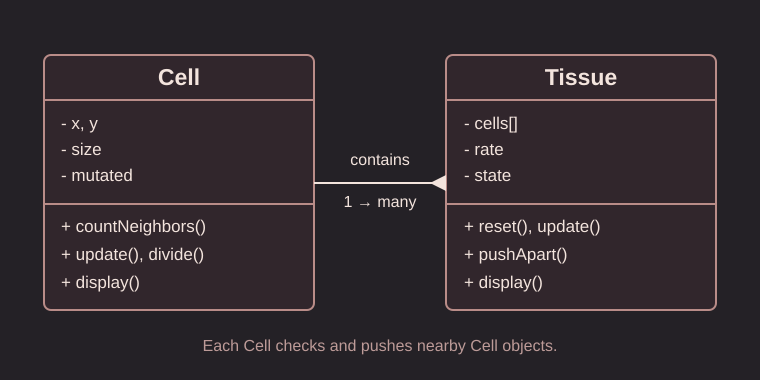

Mutating Bodies
What happens when one cell stops following the rules of the body?
01 / Interactive System
If the embed does not load, open the local version.
The tissue runs by itself. Mouse buttons change the mutation rate or regenerate the tissue. Click Enable Sound to hear a short note when a cell mutates.
02 / Intent
I wanted to explore how simple rules between individual cells can change an entire body. The project is inspired by contact inhibition, a biological process in which normal cells reduce division when they are crowded.
03 / UML Diagram

A Tissue contains many Cell objects. Each Cell checks its neighbors, may divide, and can spontaneously mutate.
04 / System Rules
- Normal cells stop dividing when they have too many neighbors.
- Each normal cell has a small chance of mutating.
- Mutated cells can divide when crowded. Their children inherit mutation.
- Overlapping cells push each other apart, changing the tissue shape.
- When all cells become mutated, the tissue fades into Tissue Collapse.
05 / Process & Emergence
First, I studied contact inhibition. Then I made a Cell class for individual behavior and a Tissue class to manage the group. I added mouse buttons to change the environment. I also used a short sound for each spontaneous mutation.
The final shape is not programmed in advance. It emerges because every cell makes local decisions and pushes against nearby cells. The mutation rate changes how quickly the tissue develops. The final collapse is an artistic ending, not a biological prediction.